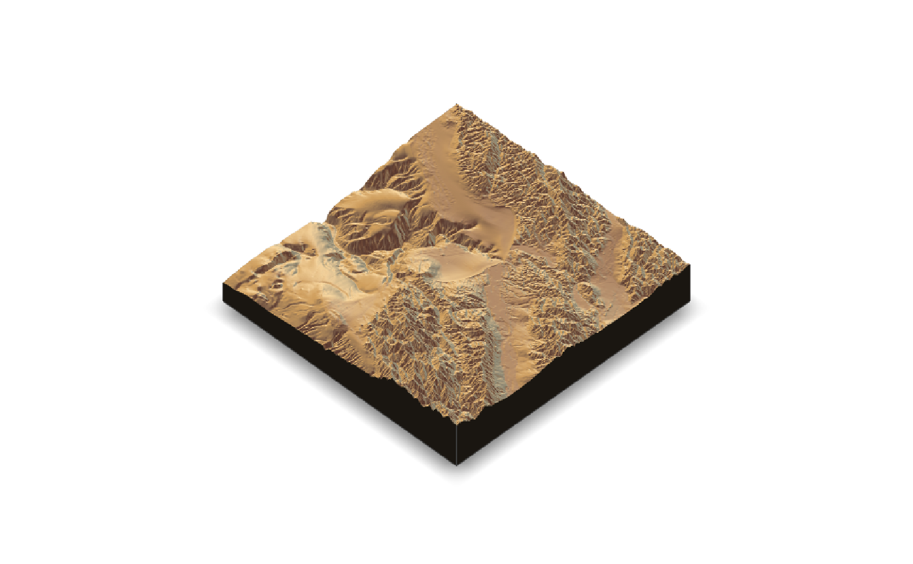
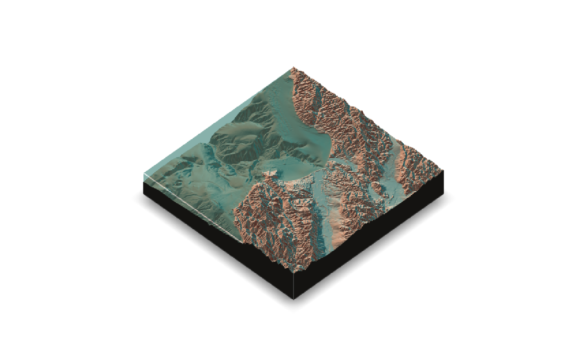
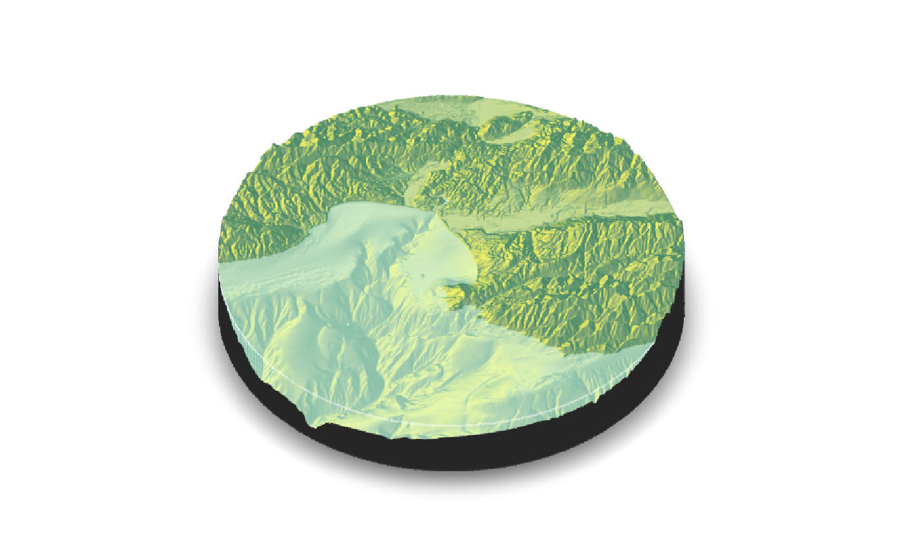
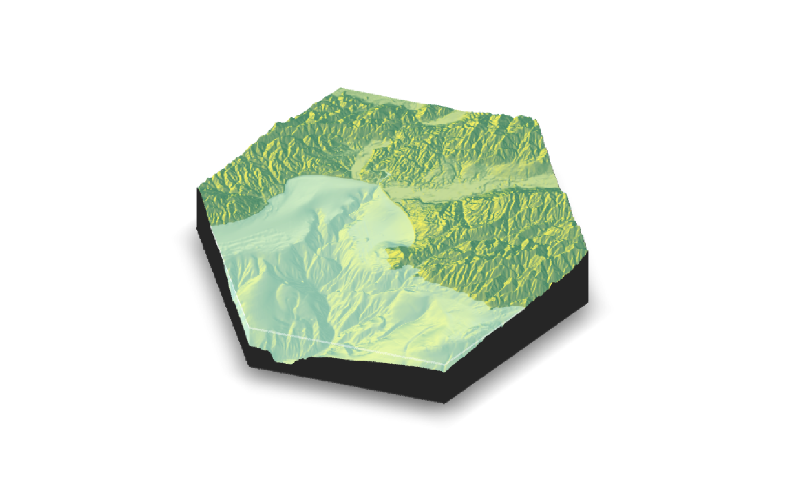
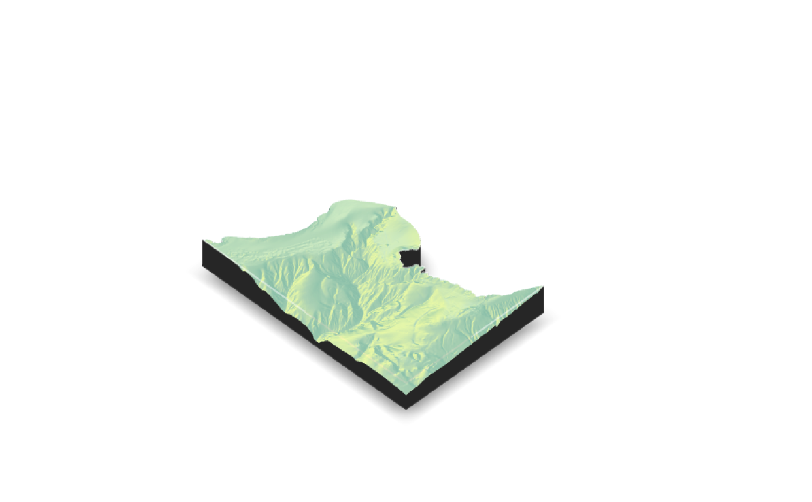

Displays the shaded map in 3D with the `rgl` package.
plot_3d( hillshade, heightmap, zscale = 1, baseshape = "rectangle", solid = TRUE, soliddepth = "auto", solidcolor = "grey20", solidlinecolor = "grey30", shadow = TRUE, shadowdepth = "auto", shadowcolor = "grey50", shadowwidth = "auto", water = FALSE, waterdepth = 0, watercolor = "dodgerblue", wateralpha = 0.5, waterlinecolor = NULL, waterlinealpha = 1, linewidth = 2, lineantialias = FALSE, theta = 45, phi = 45, fov = 0, zoom = 1, background = "white", windowsize = 600, precomputed_normals = NULL, asp = 1, triangulate = FALSE, max_error = 0, max_tri = 0, verbose = FALSE, ... )
| hillshade | Hillshade/image to be added to 3D surface map. |
|---|---|
| heightmap | A two-dimensional matrix, where each entry in the matrix is the elevation at that point. All points are assumed to be evenly spaced. |
| zscale | Default `1`. The ratio between the x and y spacing (which are assumed to be equal) and the z axis. For example, if the elevation levels are in units of 1 meter and the grid values are separated by 10 meters, `zscale` would be 10. Adjust the zscale down to exaggerate elevation features. |
| baseshape | Default `rectangle`. Shape of the base. Options are c("rectangle","circle","hex"). |
| solid | Default `TRUE`. If `FALSE`, just the surface is rendered. |
| soliddepth | Default `auto`, which sets it to the lowest elevation in the matrix minus one unit (scaled by zscale). Depth of the solid base. |
| solidcolor | Default `grey20`. Base color. |
| solidlinecolor | Default `grey30`. Base edge line color. |
| shadow | Default `TRUE`. If `FALSE`, no shadow is rendered. |
| shadowdepth | Default `auto`, which sets it to `soliddepth - soliddepth/10`. Depth of the shadow layer. |
| shadowcolor | Default `grey50`. Color of the shadow. |
| shadowwidth | Default `auto`, which sizes it to 1/10th the smallest dimension of `heightmap`. Width of the shadow in units of the matrix. |
| water | Default `FALSE`. If `TRUE`, a water layer is rendered. |
| waterdepth | Default `0`. Water level. |
| watercolor | Default `lightblue`. Color of the water. |
| wateralpha | Default `0.5`. Water transparency. |
| waterlinecolor | Default `NULL`. Color of the lines around the edges of the water layer. |
| waterlinealpha | Default `1`. Water line tranparency. |
| linewidth | Default `2`. Width of the edge lines in the scene. |
| lineantialias | Default `FALSE`. Whether to anti-alias the lines in the scene. |
| theta | Default `45`. Rotation around z-axis. |
| phi | Default `45`. Azimuth angle. |
| fov | Default `0`--isometric. Field-of-view angle. |
| zoom | Default `1`. Zoom factor. |
| background | Default `grey10`. Color of the background. |
| windowsize | Default `600`. Position, width, and height of the `rgl` device displaying the plot. If a single number, viewport will be a square and located in upper left corner. If two numbers, (e.g. `c(600,800)`), user will specify width and height separately. If four numbers (e.g. `c(200,0,600,800)`), the first two coordinates specify the location of the x-y coordinates of the bottom-left corner of the viewport on the screen, and the next two (or one, if square) specify the window size. NOTE: The absolute positioning of the window does not currently work on macOS (tested on Mojave), but the size can still be specified. |
| precomputed_normals | Default `NULL`. Takes the output of `calculate_normals()` to save computing normals internally. |
| asp | Default `1`. Aspect ratio of the resulting plot. Use `asp = 1/cospi(mean_latitude/180)` to rescale lat/long at higher latitudes to the correct the aspect ratio. |
| triangulate | Default `FALSE`. Reduce the size of the 3D model by triangulating the height map. Set this to `TRUE` if generating the model is slow, or moving it is choppy. Will also reduce the size of 3D models saved to disk. |
| max_error | Default `0.001`. Maximum allowable error when triangulating the height map, when `triangulate = TRUE`. Increase this if you encounter problems with 3D performance, want to decrease render time with `render_highquality()`, or need to save a smaller 3D OBJ file to disk with `save_obj()`, |
| max_tri | Default `0`, which turns this setting off and uses `max_error`. Maximum number of triangles allowed with triangulating the height map, when `triangulate = TRUE`. Increase this if you encounter problems with 3D performance, want to decrease render time with `render_highquality()`, or need to save a smaller 3D OBJ file to disk with `save_obj()`, |
| verbose | Default `TRUE`, if `interactive()`. Prints information about the mesh triangulation if `triangulate = TRUE`. |
| ... | Additional arguments to pass to the `rgl::par3d` function. |
#Plotting a spherical texture map of the built-in `montereybay` dataset. # \donttest{ montereybay %>% sphere_shade(texture="desert") %>% plot_3d(montereybay,zscale=50) render_snapshot(clear = TRUE)# } #With a water layer # \donttest{ montereybay %>% sphere_shade(texture="imhof2") %>% plot_3d(montereybay, zscale=50, water = TRUE, watercolor="imhof2", waterlinecolor="white", waterlinealpha=0.5) render_snapshot(clear = TRUE)# } #We can also change the base by setting "baseshape" to "hex" or "circle" # \donttest{ montereybay %>% sphere_shade(texture="imhof1") %>% plot_3d(montereybay, zscale=50, water = TRUE, watercolor="imhof1", theta=-45, zoom=0.7, waterlinecolor="white", waterlinealpha=0.5,baseshape="circle") render_snapshot(clear = TRUE)# } # \donttest{ montereybay %>% sphere_shade(texture="imhof1") %>% plot_3d(montereybay, zscale=50, water = TRUE, watercolor="imhof1", theta=-45, zoom=0.7, waterlinecolor="white", waterlinealpha=0.5,baseshape="hex") render_snapshot(clear = TRUE)# } #Or we can carve out the region of interest ourselves, by setting those entries to NA #to the elevation map passed into `plot_3d` #Here, we only include the deep bathymetry data by setting all points greater than -10 #in the copied elevation matrix to NA. mb_water = montereybay mb_water[mb_water > -10] = NA # \donttest{ montereybay %>% sphere_shade(texture="imhof1") %>% plot_3d(mb_water, zscale=50, water = TRUE, watercolor="imhof1", theta=-45, waterlinecolor="white", waterlinealpha=0.5) render_snapshot(clear = TRUE)# }